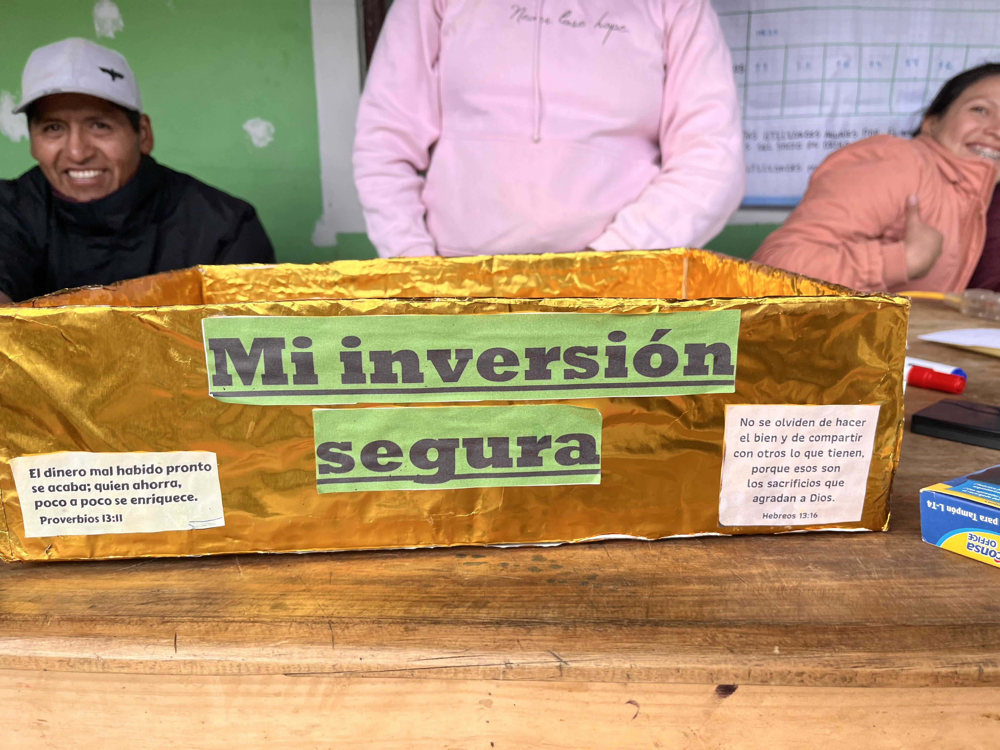

Newmont · ALAC
Exploración de impacto en Cajamarca
Evidenciamos el impacto de 15 años de inversión en Cajamarca, visitando a las comunidades en el lugar donde enfrentan los retos de la gestión financiera y deciden el rumbo de sus propios emprendimientos. Un modelo para escalar el desarrollo rural.
Innovación social
Investigación rural
Minería
